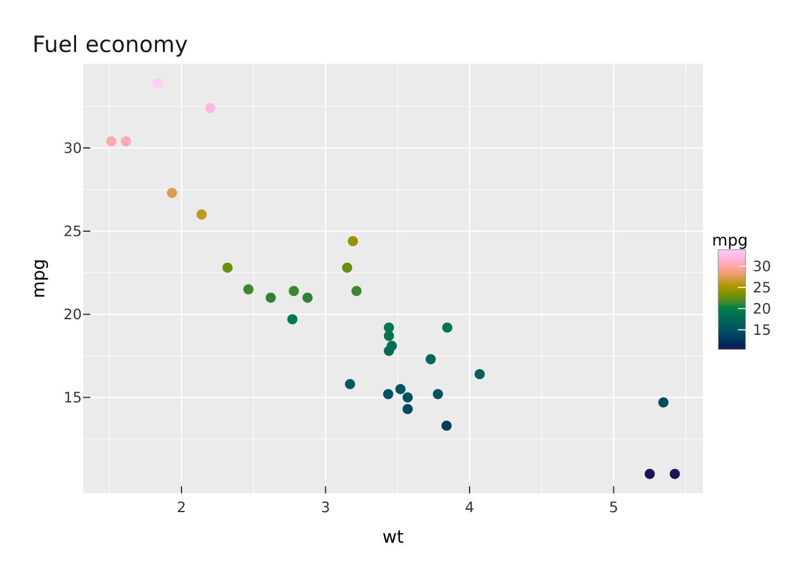

df <- data.frame(wt = mtcars$wt, mpg = mtcars$mpg, model = rownames(mtcars))
p <- vplot(df) |>
mark_point(x = wt, y = mpg, color = mpg, tooltip = model, data_id = model) |>
scale_color_continuous() |>
labs(title = "Fuel economy")Most plotting workflows re-specify the plot for each destination: one code path for the PNG in a report, another for the vector figure a journal wants, a third library entirely if the plot needs to be interactive on the web. The vellum ecosystem is built so that the specification and the destination are separate concerns. You describe the plot once; where it ends up is a choice made at the end.
The seam
A vellumplot plot is a spec. It is compiled into a vellum scene (a concrete, laid-out tree of drawing primitives) through a single generic, as_vellum_scene(). Everything downstream consumes that scene:
-
vellum’srender()writes the scene to a file, choosing raster or vector from the extension. -
vellumwidget’sas_widget()turns the same scene into an HTML widget.
Both call as_vellum_scene() under the hood. That one seam is why the same object can go three places without being rewritten.
Build the spec once
Nothing has been drawn. p is a description. You can inspect it, pass it around, store it, and decide its fate later:
summary(p)
#> <PlotSpec> 32x3 (3 columns), page 6x4 in
#>
#> ── layers
#> • mark_point(x = wt, y = mpg, color = mpg)Notice that tooltip and data_id are already on the mark. They mean nothing to a static render and everything to the widget. Carrying them in the spec from the start is what lets one object serve both.
Output 1: raster
Printing the spec draws it into the active device; that is what the chunk below does, and it is the same path a raster file takes.
p
To write it to disk as a PNG:
render_plot(p, "fuel.png") # tiny-skia raster
render_plot(p, "fuel.png", dpi = 300) # override the authored resolutionOutput 2: vector
The identical spec, sent to a vector extension, is rendered through a different backend (a hand-rolled SVG writer, or krilla for PDF) with no change to the plot code:
render_plot(p, "fuel.svg") # vector SVG
render_plot(p, "fuel.pdf") # vector PDFBecause the layout is computed once and then walked for each backend, the raster and vector versions are the same plot, not two approximations of it. The point positions, text metrics, and legend placement are identical.
Output 3: interactive widget
The same p, handed to as_widget(), compiles to the same scene and then emits an SVG plus a per-element table, wired up with hover, selection, brushing, and pan/zoom, client-side with no Shiny:
as_widget(p)The tooltip and data_id you declared back in the spec are what the widget reads. Three layers agreeing on one contract: vellumplot declares the channels, vellum carries them through the scene, vellumwidget acts on them.
Why this matters
The payoff is more than fewer keystrokes. Because there is one spec and one compiled scene:
- The outputs cannot drift. A raster figure and its interactive counterpart are guaranteed to show the same plot, because they are the same scene.
- The decision is deferred. You can write analysis code that returns a spec and let the calling context (a Quarto chunk, a Shiny app, a batch job writing PDFs) decide how to realise it.
-
Bare
vellumscenes get the same treatment.as_widget()andrender()accept a hand-builtvellumscene too, so a bespoke visual made with grobs travels the same three roads as a grammar plot.
Going lower: a bare vellum scene
The same three-way rendering exists one layer down, without the grammar. A vellum scene renders to all three formats directly:
The grammar in vellumplot is, in the end, a convenient way to produce one of these scenes. Whether the scene came from vplot() or from raw grobs, the destinations are the same.
See also
- The vellum ecosystem: the layers and how they connect.
- Performance and big data: what compiling once buys you when the data is large.